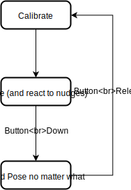

For the Embedded podcast's 300th episode "Cats and Hacks" party, I created a simple proof of concept system to be able to set the pose for a robot using hobby servos and a few resistors and capacitors. The microcontroller (in this case an Arduino Uno) uses its on-chip ADC to monitor the current drawn by the servos, interprets a change in current as a user nudging the robot into a new position, and moves until the user stops it.
The electronics side here is pretty straightforward, the servo is directly commanded from a PWM output from the Arduino, powered off a 5V rail (USB battery, my go-to portable power solution), and the ground current for the motor is sampled by an ADC pin.
Above is an oscilloscope capture showing the large-scale measurement of an increasing current draw from a servo, and the filtered vs. unfiltered current measurements. Filtering was needed beyond the usual noise filtering because the sampling rate didn't necessarily match up with motor pulses, so without it sampled current be all over the map.
Measuring ground current seemed a little iffy at first, because it will reduce the PWM high voltage as seen by the servo control input, and also force the PWM low voltage negative. It does give the opportunity for better accuracy on the measurements though (and I didn't need to figure out if I could set AREF > Vcc on the ATMega to allow high-side current monitoring). With 1 Ohm as the current sense resistor and currents peaking around 600 mA, the -0.6V min PWM_low (and corresponding 0.6V drop on total voltage powering the servo) seemed to not cause any problems.
For each servo, we check if its current draw is outside of its calibrated value by some threshold. If it is, we want to move away from the force causing the current change. But we don't have any reason to believe we know which way that is! As a most-reasonable guess, we'll move the same direction as we did the previous instant, so long as that step got us back closer to the goal (calibrated) current draw. In this way, it's just guess-and-check control.
I settled on the 2 degree step because it was the smallest that would force the servos to move each time. It also worket out well in the end with the loop timing I settled on to feel like a reasonable interface when re-positioning the posed arm. I tried ramping up servo speed by ramping step size, but it became a little less intuitively predictable, and I think I quickly got to speeds where the current spike from the motion itself was large enough to confuse the guess-and-check algorithm.
Another problem popped up when working with a physical arm: the static holding current changed depending on the angle a joint was at. Even if this was something I could model ahead of time (and I didn't want to do this), the fix is the same as one I had intended to do for another reason: I wanted my posed arm to be able to hold things for me. So I added a button that when pressed has the servos hold position independent of the force it takes (normal position-control of servos). The moment the button is released, the system samples currents on all the servos and uses that as the new baseline. With this system, you move the arm around, press + hold the button, optionally load or unload the robot with something to hold, and then let go of the robot (or stop holding it in place), then let go of the button.
As is the style these days, code is on Github.
This was a fun toe-dip into HRI -- Human-Robot Interactions. Normally you would think to control a robot's position by programming in absolute coordinates, or maybe directing it via remote control with some disconnect from the robot's actual environment. This is why factory robots are often in cages: you need to keep the squishy humans out so that they don't get in the way and get smacked. Baxter was an interesting approach to this situation, because it was designed to operate side-by-side with humans. But in that design, training a joint required pushing a button to let it know you wanted to back-drive a motor.
Not that I would trust a scheme like this on a serious strong robot, that sure seems like the kind of situation where you want to know for sure which direction you're being guided towards, as well as sensible safety limits. As a way to play with a different interaction method without spending a stupid abount on a prototype though, excellent!
"Future" interactions are so often voice, because that's how we have our most natural and high-bandwidth communication, and now with fuctionality that seems "magic" accessed by voice assistants that seems even more "obviously" what the future looks like. There's a huge variety of other interaction methods that we could explore though! I dunn' I'm just trying to say that voice may not be the best interface when we open up the solution space, that we should'net get distracted by new hotness there. Also, speech is the most obvious UI we have between humans, but in no way the only one. Guiding a person into specific poses or teaching them subtle motions with a light touch actually seems like the most obvious "UI" to me!
The motors I used here don't really matter, the concept would be the same for any servors. But to reinforce that it really doesn't matter, I'll point out that they're just a few from a batch I ordered on Ali Express when I needed a few servos for hacking and teaching with. They're obviously not up to quality levels you'd expect to get from geared servos from a hobby shop; they're loud, the gears are crunchy and can't hold a strong load, and one of the motors never worked, but I figure that starting from a 10-pack I can get about 8 good ones and it's still only 1.59 USD each. And I don't feel horrible when I break them, as I did wrecking the plastic gears on two motors during this hack (one I pushed too hard when trying to get code working, the other was a little ambitious as a shoulder motor).
At the party, Windell (of Evil Mad Scientist Laboratories fame) mentioned to me that he'd done some similar experimenting in the past, but with four-wire servos. Apparently the fourth wire allows the user to directly read the position potentiometer, so you can stop commanding the servo and let it free-wheel, then position it by hand, read the position again, and finally re-start commanding the servo to that position. I did try to find the signals internally to do this and then pull them out to the Arduino, but that was too much work for my taste.